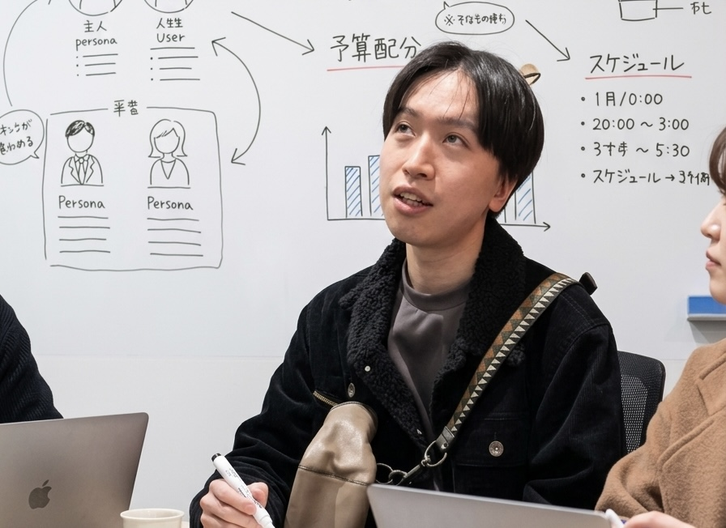
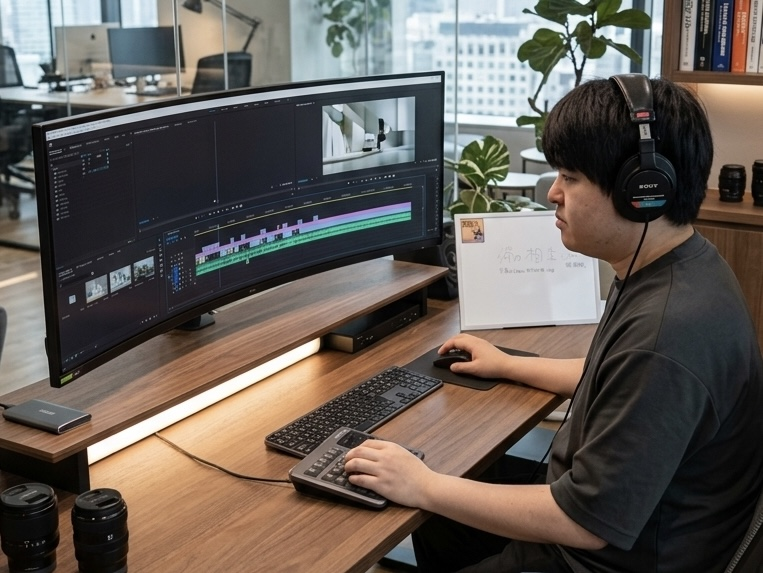
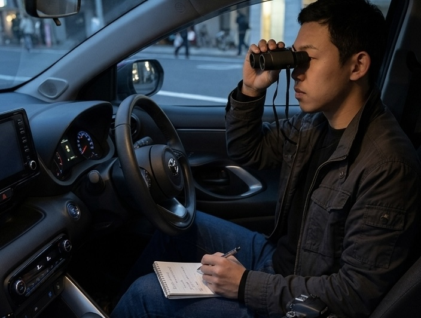

CAREERS
カナイの予想を、
カナイの予想を、
裏切り続ける仕事。
私たちは、ターゲットの思考を読み、その一歩先で待ち構える「驚きの設計者」を募集しています。
POS01 / PLANNING & MANAGEMENT
企画・マネージャー
ドッキリの根幹となるシナリオ作成から、プロジェクト全体の進行管理を担います。カナイの行動パターンを分析し、最も効果的な「仕掛け」のタイミングを算出する、軍師のような役割です。
- 競技内容（ドッキリ・クイズ）の企画立案
- タイムスケジュールの策定および進捗管理
- 外部協力者との折衝・キャスティング

POS02 / CREATIVE & EDITING
動画編集・コンテンツ作成
記録された「競技」の瞬間を、最高純度のエンターテインメントへと昇華させるクリエイター。テンポ、音響、テロップ。すべてはカナイのリアクションを最も輝かせるために存在します。
- YouTube等プラットフォーム向け動画編集
- 番組風テロップ・モーショングラフィックス制作
- 視聴者の感情をコントロールする演出設計

POS03 / FIELD INVESTIGATION
探偵業（フィールドリサーチ）
企画の成功率を100%に近づけるための情報収集。ターゲットの動線確認から、撮影現場の下見、隠しカメラの最適な設置ポイントの選定まで、隠密行動のスペシャリストを求めています。
- ターゲットの行動スケジュール・動線調査
- 撮影ロケーションの隠密ロケハン
- 現場における機密保持と監視業務
